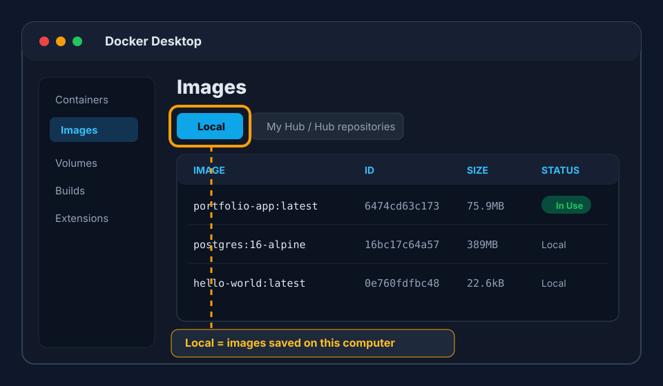
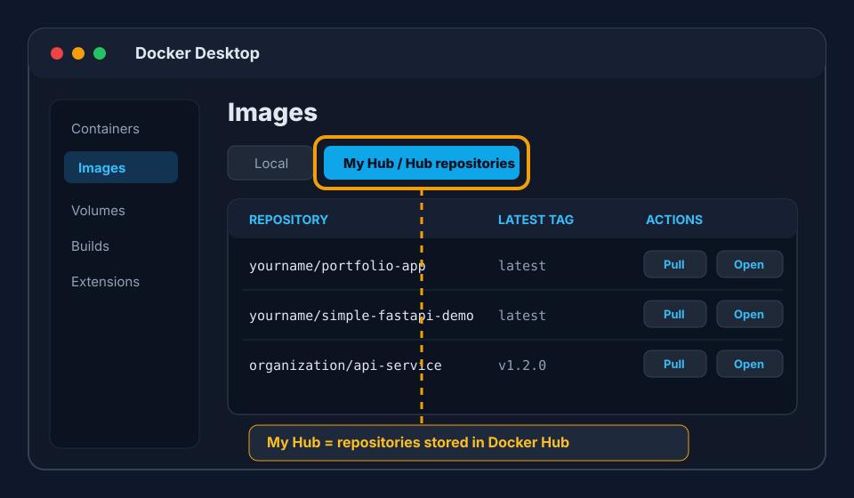

DevOps Portfolio — Step-by-Step Tutorial
A beginner-friendly walkthrough of the entire DevOps portfolio project. No prior experience required — just follow each step in order.
1. Introduction
This tutorial walks you through a complete DevOps portfolio project from start to finish. You'll learn how modern software teams deploy and manage applications using tools like Docker, Kubernetes, Terraform, and more.
Each section is written for absolute beginners. We explain every command, every file, and every concept along the way. By the end, you'll have a working portfolio project you can show to employers.
2. Who Is This Tutorial For?
This tutorial is for you if:
- You're new to DevOps and want a hands-on project for your resume
- You know how to code but have never deployed anything
- You've heard terms like "Docker" and "Kubernetes" but don't know what they do
- You want to understand the whole picture of how software gets from code to production
What You Should Know
You should be comfortable with basic terminal commands (navigating folders, running programs) and have at least a little experience with a programming language (any language). That's it. Everything else is explained here.
3. Environment Setup
Before we can do anything DevOps-related, we need to install some tools on your computer. Don't skip this section — every tool here will be used later.
Prerequisites for the Full Local Lab
The full hands-on path uses Docker Compose first, then a local Kubernetes cluster with Minikube. AWS/EKS is optional infrastructure scaffolding later in the project; you do not need AWS to run the local tutorial.
Required Tools
| Tool | Why We Need It |
|---|---|
| Git | Version control — tracks changes to code |
| Docker Desktop | Runs containers on your laptop |
| Docker Compose | Starts the app, Postgres, Prometheus, and Grafana together |
| kubectl | Talks to Kubernetes clusters |
| Minikube | Runs a small local Kubernetes cluster |
| Terraform | Validates and plans the infrastructure scaffold |
| Python 3 | Used by validation and helper tooling |
Recommended Tools
- Homebrew on macOS — easiest way to install command-line tools
- yamllint — checks YAML formatting
- actionlint — checks GitHub Actions workflows
- shellcheck — checks shell scripts
- ansible and ansible-lint — validate the optional host operations code
- helm — common Kubernetes package manager used in real projects
- Visual Studio Code — code editor, though any editor works
macOS Installation with Homebrew
Install the command-line tools:
brew install git kubectl minikube terraform python yamllint actionlint shellcheck ansible ansible-lint helmmacOSInstall Docker Desktop separately from Docker's website. After installation, open Docker Desktop and wait for it to finish starting before running Docker Compose or Minikube.
Verify Installation
git --version
docker --version
docker compose version
kubectl version --client
minikube version
terraform version
python3 --version
yamllint --version
actionlint --version
shellcheck --version
ansible --version
ansible-lint --version
helm versioncheckLocal Lab Sequence
Install tools
-> run Docker Compose local stack
-> start Minikube
-> apply Kubernetes manifests
-> check pods/services/HPA
-> test health endpoint
-> view Prometheus/GrafanaorderStep 1: Install Git
Git is the industry standard for version control. It lets you save snapshots of your code, collaborate with others, and deploy from specific versions.
Download from git-scm.com and run the installer. Accept all defaults.
Open Terminal and run:
xcode-select --installOpen a terminal and run:
sudo apt update && sudo apt install git -yVerify Git Installed
In your terminal, run:
git --versioncheckYou should see something like git version 2.40.0.
Step 2: Install Visual Studio Code
VS Code is a free code editor. We'll use it to edit project files.
- Go to code.visualstudio.com
- Download the version for your operating system
- Run the installer
Recommended VS Code Extensions
Once VS Code is open, click the Extensions icon on the left sidebar (or press Ctrl+Shift+X) and install these:
- Docker — shows Docker containers inside VS Code
- YAML — helps with Kubernetes and GitHub Actions files
- Prettier — auto-formats code
Step 3: Get the Project Code
Now let's get the portfolio project onto your computer.
Open a terminal / PowerShell and navigate to where you want the project:
cd DocumentsIf you have the project as a folder already, skip this step. Otherwise, create it:
mkdir devops-portfolio
cd devops-portfolioOpen the folder in VS Code:
code .The . means "current folder". VS Code will open with the project loaded.
app/,
docker/, and docs/. It will also show dot folders such
as .github/. Dot folders are sometimes hidden in Finder or other file
browsers, but VS Code shows them when the project folder is open.
4. The Sample Application
4.1 What's in the App Folder?
Every DevOps project deploys something. In this portfolio, we have a
simple web application. Let's look at what's inside app/:
| File | Purpose |
|---|---|
index.html | A static status dashboard page |
nginx.conf | Configuration for the Nginx web server that serves the page |
What is Nginx doing here? Nginx is the lightweight web server
inside the Docker container. It receives HTTP requests, serves
index.html from its web root, and returns simple built-in responses
for /health, /ready, and /metrics as
defined in app/nginx.conf. That gives the project realistic
health checks and monitoring endpoints without needing a backend application.
The app is intentionally simple — it's a static HTML page with a small
browser script that checks the Nginx /metrics endpoint. The real
point of this portfolio is the infrastructure around it, not the app itself.
What Does the App Do?
- Displays a "All systems operational" badge
- Shows simple Health, Metrics, and Local App status tiles
- Checks the
/metricsendpoint every 5 seconds when served by Nginx - Has a sleek dark UI inspired by modern dashboards
In a real company, the app would be more complex — maybe a blog, an e-commerce site, or an API. But the deployment process would be exactly the same.
4.2 Running the App (Without Docker)
Let's run the app directly on your computer first, so you understand the baseline.
Since index.html is a static file, we can serve it with any HTTP server. For simplicity, let's use Python's built-in server:
# Open a terminal in the project folder
cd app
# Start a simple HTTP server on port 8000
python3 -m http.server 8000terminalIf you already use Node tooling locally, you can optionally serve the static files with npx instead:
npx serve app/alternativeOpen your browser to http://localhost:8000 (or whatever port the command says). You should see the portfolio dashboard page!
app/. The real
/health, /ready, and /metrics endpoints
are configured in app/nginx.conf and work when you run the Nginx
container.
Press Ctrl+C in the terminal to stop the server when you're done.
5. Docker
5.1 What Is Docker?
Imagine you're moving to a new apartment. You could carry each item one by one (books, dishes, clothes) — but they might break, get lost, or you might forget something. Instead, you pack everything into boxes. Each box contains everything needed for a room.
Docker is like those boxes, but for software. A Docker container packages your application with everything it needs (code, dependencies, settings) so it runs identically on any computer.
Key Terms
| Term | Analogy | Meaning |
|---|---|---|
| Image | A recipe / blueprint | A read-only template with instructions for creating a container |
| Container | The actual dish you cook | A running instance of an image |
| Dockerfile | The recipe card | A text file with instructions to build an image |
| Registry | A cookbook library | A place to store and share images (like Docker Hub) |
The most important relationship is this: a Dockerfile is used to build an image, and an image is used to start one or more containers. The image stays saved on your computer like a reusable template. A container is the live running copy of that template, with its own process, filesystem view, network settings, and logs.
5.2 Installing Docker
Go to docker.com and download Docker Desktop for your OS.
Run the installer. On Windows, make sure WSL 2 is selected during installation (it enables Linux containers on Windows).
Open Docker Desktop (it will start a background service). You'll see a whale icon in your system tray.
Verify Docker is working:
docker --version
docker run hello-worldterminal
The docker run hello-world command downloads a tiny test image
and runs it. If you see a welcome message, Docker is working!
Docker Desktop: Local and Hub Tabs
Docker Desktop gives you a visual way to inspect the same things you manage
from the terminal. In the Images view, the
Local tab shows images stored on your computer, such as
portfolio-app:latest, postgres:16-alpine, or
grafana/grafana:11.0.0. This is the visual version of running
docker images.
The Docker Hub repositories or My Hub tab shows images in Docker Hub repositories that your signed-in Docker account can access. Use this area when you want to pull an image from Docker Hub, inspect a remote repository, or push an image you have tagged with your Docker Hub username. Docker Desktop's UI changes over time, but the idea is the same: Local means images on your machine, and Hub means images stored in Docker Hub.

docker images.

docker group: sudo usermod -aG docker $USER
then log out and back in. On Windows/Mac, Docker Desktop should handle this automatically.
5.3 Understanding the Dockerfile
Let's look at the Dockerfile in our project (docker/Dockerfile):
FROM nginx:1.27-alpine
COPY app/index.html /usr/share/nginx/html/index.html
COPY app/nginx.conf /etc/nginx/conf.d/default.conf
EXPOSE 8080
HEALTHCHECK --interval=30s --timeout=3s --start-period=5s --retries=3 \
CMD wget --no-verbose --tries=1 --spider http://127.0.0.1:8080/health || exit 1Line-by-Line Explanation
| Line | What It Does |
|---|---|
FROM nginx:1.27-alpine |
Start from the official Nginx image. Alpine keeps the image small. |
COPY app/index.html ... |
Copy the static HTML page into Nginx's web root. |
COPY app/nginx.conf ... |
Replace the default Nginx site config with this repo's config. |
EXPOSE 8080 |
Document that this container listens on port 8080. Doesn't actually publish the port. |
HEALTHCHECK ... |
Docker checks the Nginx /health endpoint. If it fails repeatedly, the container is marked unhealthy. |
index.html and also
returns simple text responses for /health, /ready,
and /metrics from app/nginx.conf.
5.4 Building a Docker Image
Now let's build an image from our Dockerfile:
# Make sure you're in the project root folder
cd devops-portfolio
# Build the image
docker build -t portfolio-app:latest -f docker/Dockerfile .terminalWhat each part means:
docker build | The command to build an image |
-t portfolio-app:latest | Tag the image with a name (portfolio-app) and version (latest) |
-f docker/Dockerfile | Tell Docker which Dockerfile to use |
. | The "build context" — Docker sends this folder to the Docker daemon |
Watch the output. Docker executes each instruction in the Dockerfile and caches each step. If you build again later and the code hasn't changed, it'll use the cache — much faster!
portfolio-app:latest. It is
not running yet. It is a packaged version of the static app, Nginx, and the
Nginx configuration, ready to be started as a container.
List Your Images
docker imagesterminalYou should see portfolio-app in the list along with its size.
In the output, IMAGE is the image name and tag, and
ID is Docker's internal image ID. The tutorial image should appear
as portfolio-app:latest. If Docker Desktop shows a
U or "In Use" marker, it means that image is currently being used
by a container or related Docker runtime.
Practice: Remove the hello-world Image
The hello-world:latest image is safe to use for cleanup practice.
First check whether a container was created from it:
docker ps -a --filter ancestor=hello-world:latestterminalIf the command lists a container, remove that container first, then remove the image:
docker rm <container-id>
docker rmi hello-world:latestterminal
Check your images again with docker images. Remember:
docker rm removes containers, while docker rmi
removes images.
5.5 Running a Container
Now start a container from your image:
docker run -d -p 8080:8080 --name portfolio-demo portfolio-app:latestterminalWhat each part means:
-d | Detached mode — runs in the background so you can keep using the terminal |
-p 8080:8080 | Map port 8080 on your computer to port 8080 in the container |
--name portfolio-demo | Give the container a name so you can reference it easily |
portfolio-app:latest | The image name and tag to run |
This command creates a container named
portfolio-demo from the portfolio-app:latest image.
If you run the same image again with a different name, Docker creates another
separate container from the same template. The image is the source; containers
are the running copies.
Check It's Running
docker psterminalThis lists running containers. You should see portfolio-demo.
Open your browser to http://localhost:8080 — the app is live!
Stop and Remove the Container
docker stop portfolio-demo
docker rm portfolio-demoterminaldocker rm -f portfolio-demo
stops AND removes in one command. The -f flag forces it.
Other Useful Docker Commands
Use docker exec -it portfolio-demo sh only after the container is
already running. It opens a shell inside the container so you can inspect files
or debug what Docker packaged. For example, you can run
ls /usr/share/nginx/html to see the served HTML file or
cat /etc/nginx/conf.d/default.conf to view the Nginx config.
Type exit when you are done.
# View logs from a container
docker logs portfolio-demo
# Execute a command inside a running container
docker exec -it portfolio-demo sh
# See running AND stopped containers
docker ps -a
# Remove unused images to free disk space
docker image prunecheatsheet
Use docker image prune -a when you want to remove all images that
are not used by at least one container. This is stronger than
docker image prune, so check docker ps -a first if
you are unsure what is still connected to a container.
docker system prune -a --volumesdestructive cleanup5.6 Pushing to a Registry
An image registry is like GitHub for Docker images. You upload your image, and servers can download it later to run. Common registries:
- Docker Hub — the default, free for public images
- GitHub Container Registry (GHCR) — integrated with GitHub
- Amazon ECR — AWS's registry, used in our Terraform code
How to See Docker Hub
You can browse Docker Hub in your web browser at
https://hub.docker.com.
Search for image names like nginx, postgres,
grafana/grafana, or prom/prometheus. If you push
your own image, search for your Docker Hub username and repository name, such
as yourusername/portfolio-app.
You can also use Docker Desktop. Open Images, then choose Hub, Docker Hub repositories, or My Hub, depending on your Docker Desktop version. That area shows images from Docker Hub and repositories available to your signed-in Docker account.
From the terminal, use docker search to search Docker Hub and
docker pull to download an image:
postgres:16-alpine instead of only postgres.
docker search postgres
docker search nginx
docker pull postgres:16-alpine
docker imagesterminalPush to Docker Hub (Optional)
# Login (you need a free Docker Hub account)
docker login
# Tag your image with your Docker Hub username
docker tag portfolio-app:latest yourusername/portfolio-app:latest
# Push it
docker push yourusername/portfolio-app:latestterminalTo delete an image you pushed, sign in to Docker Hub, go to My Hub → Repositories, open the repository, then go to Settings and delete the repository or a specific tag.
6. Docker Compose
6.1 What Is Docker Compose?
The static Nginx app can run by itself, but this lab also starts PostgreSQL,
Prometheus, and Grafana so you can practice running a small local environment.
We could start each one with separate docker run commands,
but that's tedious and error-prone.
Docker Compose lets you define multiple containers in one file and start them all with a single command. Think of it as a group recipe — it sets the table for the whole meal, not just one dish.
What Are These Extra Services?
| Service | What It Does | Why It Is Here |
|---|---|---|
| PostgreSQL | A relational database that stores structured data in tables | Included so you can practice running a database container, health checks, ports, and persistent volumes |
| Prometheus | A monitoring system that collects and stores numeric metrics over time | Scrapes the app's /metrics endpoint so you can see how monitoring data is collected |
| Grafana | A dashboard tool that turns metrics into charts and visual panels | Connects to Prometheus so you can explore the collected metrics visually |
6.2 Understanding docker-compose.yml
You are not expected to memorize every Docker Compose option. Most engineers
start from a known template, official docs, an image publisher's example, or a
previous project file, then validate the result with
docker compose config. The important skill is understanding the
basic shape of the file and what each common section is responsible for.
| Compose Key | What To Remember |
|---|---|
services | The containers you want to run |
image | Use an existing image from a registry or your local machine |
build | Build an image from a Dockerfile |
ports | Map a port on your computer to a port inside the container |
environment | Set environment variables inside the container |
volumes | Persist data or mount files into the container |
depends_on | Describe startup ordering or dependency relationships |
networks | Control how containers talk to each other |
healthcheck | Tell Docker how to check whether a service is healthy |
Here's our compose file (docker/docker-compose.yml) broken down section by section:
services:headerThe file starts with services:, which is where each container is defined.
app:
build:
context: ..
dockerfile: docker/Dockerfile
ports:
- "8080:8080"
depends_on:
postgres:
condition: service_healthy
networks:
- portfolio-netapp service| Setting | Meaning |
|---|---|
build.context: .. | Build context is the parent folder (the project root, because we're inside docker/) |
dockerfile: docker/Dockerfile | Build the static Nginx app image from this repo's Dockerfile |
ports: ["8080:8080"] | Map host port 8080 to container port 8080 |
depends_on: | Demonstrate Compose startup ordering by waiting for the lab PostgreSQL service to be healthy before starting the app container |
networks: | Attach to the custom network so containers can talk to each other |
docker/docker-compose.yml, but the current static Nginx app does
not read from it, write to it, or connect to it. It is included only as an
infrastructure and observability practice service, so you can work with Compose
dependencies, health checks, persistent volumes, database ports, and monitoring
targets in a local lab.
postgres:
image: postgres:16-alpine
ports:
- "5432:5432"
environment:
POSTGRES_USER: portfolio
POSTGRES_PASSWORD: devpassword
POSTGRES_DB: portfolio
volumes:
- pgdata:/var/lib/postgresql/data
healthcheck:
test: ["CMD-SHELL", "pg_isready -U portfolio"]
interval: 5s
timeout: 5s
retries: 5
networks:
- portfolio-netpostgres service| Setting | Meaning |
|---|---|
image: postgres:16-alpine | Use an official PostgreSQL image (no Dockerfile needed) |
volumes: pgdata:... | Persist database files so data survives container restarts |
healthcheck | PostgreSQL has a built-in command to check if it's ready. Compose uses this for lab startup ordering; the static app itself still does not use the database. |
prometheus:
image: prom/prometheus:v2.53.0
ports:
- "9090:9090"
volumes:
- ../monitoring/prometheus.yml:/etc/prometheus/prometheus.yml
- ../monitoring/alerts.yml:/etc/prometheus/alerts.yml
- prometheus-data:/prometheus
networks:
- portfolio-netprometheus service grafana:
image: grafana/grafana:11.0.0
ports:
- "3000:3000"
environment:
GF_SECURITY_ADMIN_PASSWORD: admin
volumes:
- grafana-data:/var/lib/grafana
networks:
- portfolio-netgrafana servicevolumes:
pgdata:
prometheus-data:
grafana-data:
networks:
portfolio-net:
driver: bridgebottom
The volumes: section at the bottom declares the
named volumes used by services. The networks: section declares the
network. The bridge driver is the default — it creates an
isolated network on your machine.
6.3 Starting Everything with docker compose up
Run this from the project root:
docker compose -f docker/docker-compose.yml up -dterminalWhat happens:
- Docker pulls any images you don't have locally (PostgreSQL, Prometheus, Grafana)
- Docker builds the app image from the Dockerfile
- Docker creates a network called
portfolio-net - Docker starts the containers in dependency order (PostgreSQL first, then the app)
- All containers run in the background (
-dflag)
Check Status
docker compose -f docker/docker-compose.yml psterminalYou should see 4 containers: app, postgres, prometheus, grafana.
What's Running Where?
| Service | URL | Credentials |
|---|---|---|
| Portfolio App | http://localhost:8080 | none |
| Prometheus | http://localhost:9090 | none |
| Grafana | http://localhost:3000 | admin / admin |
| PostgreSQL | localhost:5432 | portfolio / devpassword |
View Logs
# See logs from all services
docker compose -f docker/docker-compose.yml logs
# Follow logs from a specific service
docker compose -f docker/docker-compose.yml logs -f app
# Follow logs for all services (like tail -f)
docker compose -f docker/docker-compose.yml logs -fterminal6.4 Stopping Everything
Turning off your computer does not wipe Docker data. Docker Desktop stops, so running containers stop too, but most Docker objects stay on disk until you remove them.
| Docker Object | What Usually Happens After Shutdown |
|---|---|
| Images | Stay on disk unless you remove them |
| Volumes | Stay on disk unless you remove volumes |
| Containers | Usually stay, but are stopped |
| Networks | May stay or be recreated by Compose later |
When Docker Desktop is running again, you can bring the lab back with:
docker compose -f docker/docker-compose.yml up -dterminalFor normal stopping at the end of a study session, use:
docker compose -f docker/docker-compose.yml downterminalThis stops and removes all containers, but preserves your data volumes. To also remove volumes (which deletes database data):
docker compose -f docker/docker-compose.yml down -vcaution
To also remove images created or used by the Compose project, use
docker compose -f docker/docker-compose.yml down --rmi all.
This is optional cleanup, not part of the normal study flow.
-v flag deletes volumes. Only
use this when you want a completely fresh start. Your database data will be gone!
7. CI / CD (Continuous Integration / Continuous Deployment)
7.1 What Is CI/CD?
Imagine you're writing a big essay. You could write the whole thing in one go, then check for errors at the end. But if you find a problem, it's hard to fix. Instead, it's better to check each paragraph as you write it.
CI/CD automates this checking and delivery process for software:
| Term | Meaning | Analogy |
|---|---|---|
| CI (Continuous Integration) |
Every time a developer pushes code, automatically run tests and checks | Checking each paragraph for spelling and grammar as you write |
| CD (Continuous Deployment) |
After tests pass, automatically deploy the code to production | After the essay is checked, automatically publish it to the class website |
7.2 The CI Pipeline (ci.yml)
Let's examine our CI pipeline file at .github/workflows/ci.yml:
.github, then open workflows, then click
ci.yml. The .github folder contains GitHub-specific
project settings. In this repo, its most important files are the GitHub Actions
workflow files: ci.yml for checks and cd.yml for the
deployment flow.
name: CI Pipeline
on:
push:
branches: [main, develop]
pull_request:
branches: [main]trigger
This says: "Run this workflow whenever code is pushed to main or
develop branches, OR when a pull request targets main."
env:
REGISTRY: ghcr.io
IMAGE_NAME: ${{ github.repository }}
jobs:
lint:
runs-on: ubuntu-latest
steps:
- uses: actions/checkout@v4
- name: YAML lint
uses: ibiqlik/action-yamllint@v3
- name: GitHub Actions lint
uses: raven-actions/actionlint@v2
- name: ShellCheck
uses: ludeeus/action-shellcheck@master
- name: Install Ansible lint tools
run: pipx install --include-deps ansible-lint
- name: Ansible syntax check
run: ansible-playbook -i ansible/inventory.example.ini ansible/playbook.yml --syntax-check
- name: Ansible lint
run: ansible-lint ansible/playbook.yml
validate-html:
runs-on: ubuntu-latest
needs: lint
steps:
- uses: actions/checkout@v4
- name: Check HTML files
run: xmllint --noout app/index.html
validate-infrastructure:
runs-on: ubuntu-latest
needs: validate-html
steps:
- uses: actions/checkout@v4
- uses: hashicorp/setup-terraform@v3
- uses: azure/setup-kubectl@v4
- uses: helm/kind-action@v1
- run: docker compose -f docker/docker-compose.yml config
- run: docker build -f docker/Dockerfile -t portfolio/app:ci .
- run: terraform fmt -recursive -check infrastructure/terraform
- working-directory: infrastructure/terraform
run: terraform init -backend=false
- working-directory: infrastructure/terraform
run: terraform validate
- run: |
kubectl apply -f infrastructure/kubernetes/namespaces.yaml
kubectl apply --dry-run=server -f infrastructure/kubernetes/
docker-publish:
runs-on: ubuntu-latest
needs: validate-infrastructure
if: github.ref == 'refs/heads/main'
steps:
- uses: actions/checkout@v4
- name: Log in to registry
uses: docker/login-action@v3
with:
registry: ${{ env.REGISTRY }}
username: ${{ github.actor }}
password: ${{ secrets.GITHUB_TOKEN }}
- name: Build and push
uses: docker/build-push-action@v5
with:
context: .
file: docker/Dockerfile
push: true
tags: ${{ env.REGISTRY }}/${{ env.IMAGE_NAME }}:${{ github.sha }}jobsThe Four Jobs (explained simply)
| Job | Runs | What It Checks |
|---|---|---|
| lint | ubuntu-latest | Runs YAML lint, GitHub Actions lint, ShellCheck, Ansible syntax check, and Ansible lint |
| validate-html | ubuntu-latest | Checks the static HTML files under app/ |
| validate-infrastructure | ubuntu-latest | Checks Docker Compose, builds the Nginx image, validates Terraform, and dry-runs Kubernetes manifests against a Kind cluster |
| docker-publish | ubuntu-latest (only on main branch) | If validation passes and the push is on main, builds and pushes the image to GitHub Container Registry |
Key Concepts
needs:— creates dependencies. HTML validation waits for linting, infrastructure validation waits for HTML validation, and publishing waits for infrastructure validation.- Actions —
uses:references pre-built GitHub Actions.actions/checkout@v4fetches your code. Terraform, kubectl, and Kind actions prepare validation tools. - Secrets —
${{ secrets.GITHUB_TOKEN }}is automatically created by GitHub. You don't need to set it up. - Kind — CI starts a temporary Kubernetes cluster so
kubectl apply --dry-run=servercan validate manifests against a real API server.
7.3 The CD Pipeline (cd.yml)
name: CD Pipeline
on:
push:
tags:
- "v*.*.*"trigger
This pipeline triggers when you push a tag that matches the pattern
v1.0.0, v2.3.1, etc. Tags are like bookmarks — they
mark a specific version in your git history.
jobs:
build-image:
runs-on: ubuntu-latest
deploy-staging:
runs-on: ubuntu-latest
needs: build-image
environment: staging
deploy-production:
runs-on: ubuntu-latest
needs:
- build-image
- deploy-staging
environment:
name: production
url: ${{ env.PRODUCTION_URL }}release flowThe first job builds and pushes the release image to GitHub Container Registry. Then staging deploys that exact image. Production waits for staging to succeed.
Building the Release Image
- name: Build and push release image
uses: docker/build-push-action@v5
with:
context: .
file: docker/Dockerfile
push: true
tags: ${{ env.REGISTRY }}/${{ env.IMAGE_NAME }}:${{ github.ref_name }}image
The image tag is the git tag that triggered the workflow, such as
v1.0.0. That makes releases traceable: the Kubernetes deployment
points to the image built from that release tag.
Rolling Deployment with Rollback
- name: Rolling deployment
run: |
set -euo pipefail
trap 'kubectl rollout undo deployment/app -n "${PRODUCTION_NAMESPACE}"' ERR
kubectl set image deployment/app \
app=${{ needs.build-image.outputs.image }} \
-n "${PRODUCTION_NAMESPACE}"
kubectl rollout status deployment/app -n "${PRODUCTION_NAMESPACE}" --timeout=180s
- name: Smoke test
run: curl -sf "${PRODUCTION_URL}/health"productionapp in the target namespaces. The local tutorial
path still uses Docker Compose and Minikube; AWS is not required for learning
the repo.
7.4 Setting This Up on GitHub
To use GitHub Actions with this project, follow these steps:
Create a GitHub repository and push your code:
# Initialize git
git init
git add .
git commit -m "Initial commit"
# Connect to GitHub (replace YOUR_USER with your GitHub username)
git remote add origin https://github.com/YOUR_USER/devops-portfolio.git
git branch -M main
git push -u origin mainterminalGo to your repository on GitHub.com. Click the Actions tab. You'll see your CI pipeline ready to run!
For the CD pipeline, you'd need to add these secrets (Settings > Secrets and variables > Actions):
| Secret | Value |
|---|---|
AWS_ACCESS_KEY_ID | Your AWS access key |
AWS_SECRET_ACCESS_KEY | Your AWS secret key |
8. Kubernetes
8.1 What Is Kubernetes?
Docker runs containers on your computer. But what if you have 100 computers? What if one computer crashes? What if you need to update all 100 computers at once?
Kubernetes (often called K8s — the "8" is for the 8 letters between "K" and "s") is a system for managing containers across many computers. It does three main things:
- Scheduling — decides which computer runs which container
- Scaling — runs more copies when traffic is high, fewer when low
- Self-healing — if a container crashes, starts a new one automatically
8.2 Key Concepts
| Concept | Analogy | YAML File |
|---|---|---|
| Pod | The smallest unit — a single running container | Defined inside a Deployment |
| Deployment | An instruction sheet: "Run 3 copies of this container, update them gradually" | deployment.yaml |
| Service | A reception desk: "Talk to this address, and I'll forward you to a healthy pod" | deployment.yaml (same file) |
| Ingress | A building sign: "www.myapp.com points here" (handles DNS and TLS/SSL) | ingress.yaml |
| HPA | A thermostat: "If CPU > 70%, add more pods; if low, remove some" | deployment.yaml (same file) |
| Namespace | A floor in the hotel: separates different departments (production vs staging) | ingress.yaml |
| PDB | Fire code: "Must keep at least 2 pods running at all times" | ingress.yaml |
8.3 Deployment Explained
Let's break down infrastructure/kubernetes/deployment.yaml. We'll go piece by piece:
apiVersion: apps/v1
kind: Deployment
metadata:
name: app
namespace: production
labels:
app: portfolio-app
spec:
replicas: 3
strategy:
type: RollingUpdate
rollingUpdate:
maxSurge: 1
maxUnavailable: 0
selector:
matchLabels:
app: portfolio-appWhat each field does:
replicas: 3 | Always keep 3 copies of the app running |
type: RollingUpdate | Update pods one at a time instead of all at once (zero downtime) |
maxSurge: 1 | During update, run at most 1 extra pod above the desired 3 |
maxUnavailable: 0 | Never have fewer than 3 pods available (zero downtime guarantee) |
matchLabels | The selector tells the Deployment which pods to manage |
template:
metadata:
labels:
app: portfolio-app
spec:
containers:
- name: app
image: ghcr.io/portfolio/app:latest
ports:
- containerPort: 8080
name: http
- containerPort: 9090
name: metricsThis section defines the pod template — what each pod looks like. The labels on the pod must match the selector above.
env:
- name: DB_HOST
valueFrom:
secretKeyRef:
name: db-credentials
key: hostEnvironment variables can come from Secrets (stored separately in Kubernetes, not hard-coded). This is more secure — passwords never appear in the YAML file.
resources:
requests:
cpu: 256m
memory: 512Mi
limits:
cpu: 512m
memory: 1Gi| Setting | Meaning |
|---|---|
requests | "Minimum" — Kubernetes guarantees at least this much CPU and memory |
limits | "Maximum" — the pod can NEVER use more than this |
256m CPU | 256 milli-CPU = one quarter of a CPU core |
512Mi memory | 512 Mebibytes of RAM (about 537 MB) |
livenessProbe:
httpGet:
path: /health
port: 8080
initialDelaySeconds: 10
periodSeconds: 15
readinessProbe:
httpGet:
path: /ready
port: 8080
initialDelaySeconds: 5
periodSeconds: 10- Liveness probe — "Is the app alive?" If it fails, Kubernetes kills and restarts the pod.
- Readiness probe — "Is the app ready to serve traffic?" If it fails, Kubernetes removes the pod from the Service (no traffic sent to it).
affinity:
podAntiAffinity:
preferredDuringSchedulingIgnoredDuringExecution:
- weight: 100
podAffinityTerm:
labelSelector:
matchExpressions:
- key: app
operator: In
values:
- portfolio-app
topologyKey: kubernetes.io/hostnameAnti-affinity means "spread pods across different computers." Kubernetes will try (but not require) to put each pod on a different physical machine. This way, if one machine crashes, you still have pods running on others.
- If 1 machine fails, 2 pods remain (still serving traffic)
- During updates, 2 pods stay running while 1 updates
- You can survive any single point of failure
8.4 Service Explained
---
apiVersion: v1
kind: Service
metadata:
name: app
namespace: production
labels:
app: portfolio-app
spec:
type: ClusterIP
ports:
- port: 80
targetPort: 8080
name: http
- port: 9090
targetPort: 9090
name: metrics
selector:
app: portfolio-app| Field | Meaning |
|---|---|
type: ClusterIP | Internal-only IP (accessible inside the cluster, not from the internet) |
port: 80 | The port this Service listens on (inside the cluster) |
targetPort: 8080 | The port on the pod that receives traffic |
selector | Routes traffic to any pod with the label app: portfolio-app |
Think of a Service as a load balancer. When another service in
the cluster connects to http://app:80, the Service forwards the
request to one of the 3 healthy pods.
Comparison: Service Types
| Type | Accessible From | Use Case |
|---|---|---|
ClusterIP | Inside the cluster only | Internal microservices |
NodePort | Outside (via node IP + a high port) | Testing, development |
LoadBalancer | Outside (via cloud load balancer) | External-facing services (creates an AWS/GCP load balancer) |
8.5 Horizontal Pod Autoscaler (HPA)
apiVersion: autoscaling/v2
kind: HorizontalPodAutoscaler
metadata:
name: app
namespace: production
spec:
scaleTargetRef:
apiVersion: apps/v1
kind: Deployment
name: app
minReplicas: 3
maxReplicas: 10
metrics:
- type: Resource
resource:
name: cpu
target:
type: Utilization
averageUtilization: 70
- type: Resource
resource:
name: memory
target:
type: Utilization
averageUtilization: 80The HPA is like a smart thermostat for your deployment:
- It measures CPU and memory usage across all pods
- If average CPU exceeds 70%, it adds more pods (up to 10)
- If CPU drops below 70%, it removes pods (down to 3 minimum)
- Same logic applies to memory at 80% threshold
8.6 Ingress & TLS
apiVersion: networking.k8s.io/v1
kind: Ingress
metadata:
name: app
namespace: production
annotations:
kubernetes.io/ingress.class: nginx
cert-manager.io/cluster-issuer: letsencrypt-prod
nginx.ingress.kubernetes.io/ssl-redirect: "true"
spec:
ingressClassName: nginx
tls:
- hosts:
- app.example.com
- api.example.com
secretName: app-tls
rules:
- host: app.example.com
http:
paths:
- path: /
pathType: Prefix
backend:
service:
name: app
port:
number: 80
- host: api.example.com
http:
paths:
- path: /
pathType: Prefix
backend:
service:
name: app
port:
number: 80An Ingress is the front door to your cluster. It handles:
- DNS routing —
app.example.comgoes to one set of services,api.example.comto another - TLS/SSL termination — automatically gets HTTPS certificates from Let's Encrypt (free)
- SSL redirect — forces all HTTP traffic to HTTPS
How cert-manager Works
The annotation cert-manager.io/cluster-issuer: letsencrypt-prod
tells a tool called cert-manager to automatically request and
renew SSL certificates from Let's Encrypt. It does this without manual intervention
— the certificates are stored in a Kubernetes Secret called app-tls.
There are also two Namespace definitions and a PodDisruptionBudget (PDB) at the bottom:
apiVersion: policy/v1
kind: PodDisruptionBudget
metadata:
name: app
namespace: production
spec:
minAvailable: 2
selector:
matchLabels:
app: portfolio-appA PDB guarantees that at least 2 pods are always running, even during maintenance (like when an AWS worker node needs to be replaced). Without this, Kubernetes might drain all pods from a node at once, causing downtime.
8.7 Applying Manifests to a Cluster
Run this from the repository root. The dry-run command asks Kubernetes to validate the manifests without saving anything.
# Check that kubectl can see your cluster
kubectl get nodes
# Validate the manifests without applying them
kubectl apply --dry-run=server -f infrastructure/kubernetes/
# Apply all manifests in the Kubernetes folder
kubectl apply -f infrastructure/kubernetes/
# See what's running
kubectl get pods,svc,hpa -n production
# Check on a specific deployment
kubectl rollout status deployment/app -n production
# View pod logs
kubectl logs -n production -l app=portfolio-app
# Delete everything
kubectl delete -f infrastructure/kubernetes/kubectl commandsSetting Up a Local Cluster with Minikube
After installing Docker Desktop, kubectl, and Minikube, start the local cluster and deploy the app image into it.
# Start local Kubernetes
minikube start
kubectl get nodes
# Enable the ingress controller
minikube addons enable ingress
# Build the app image and load it into Minikube
docker build -f docker/Dockerfile -t portfolio/app:local .
minikube image load portfolio/app:local
# Validate and apply the repo manifests
kubectl apply --dry-run=server -f infrastructure/kubernetes/
kubectl apply -f infrastructure/kubernetes/
# Use the locally built image for this lab
kubectl set image deployment/app app=portfolio/app:local -n production
kubectl rollout status deployment/app -n production
# Check the workload, service, and autoscaler
kubectl get pods,svc,hpa -n productionminikube setupTo test the app endpoint, keep this command running in one terminal:
kubectl port-forward svc/app 18080:80 -n productionterminal 1Then open a second terminal and run:
curl -sf http://127.0.0.1:18080/health
curl -sf http://127.0.0.1:18080/ready
curl -sf http://127.0.0.1:18080/metricsterminal 2Stopping or Deleting Minikube
# Stop the local cluster but keep it available for later
minikube stop
# Delete the local cluster completely
minikube deletecleanup9. Terraform (Infrastructure as Code)
9.1 What Is Terraform?
Before Terraform, when companies needed servers, a person would log into a website (like the AWS Console), click buttons, and create resources manually. This was:
- Slow — took hours to click through menus
- Error-prone — easy to forget a setting
- Undocumented — nobody knew exactly what was configured
Terraform solves this by letting you define your infrastructure in code. You write a file describing what you want (a VPC, a database, a Kubernetes cluster), and Terraform creates it automatically.
Key Terraform Concepts
| Concept | Meaning |
|---|---|
| Provider | A plugin that talks to a specific cloud (AWS, Azure, GCP, etc.) |
| Resource | A single infrastructure component (a VPC, a subnet, a database) |
| Module | A reusable group of resources (like a recipe for an EKS cluster) |
| State | A file that tracks what Terraform has created (so it knows what to update/delete) |
| Plan | A preview of what Terraform will change (like "git diff" but for infrastructure) |
9.2 The Terraform Files
We have three files in infrastructure/terraform/:
| File | Purpose |
|---|---|
main.tf | The main file with all the resources (VPC, EKS, RDS, ECR) |
variables.tf | Input variables — lets you customize settings without editing the main file |
outputs.tf | Output values — shows useful information after creation (like the database URL) |
main.tf Breakdown
Provider Setup:
terraform {
required_version = ">= 1.6"
backend "s3" {
bucket = "portfolio-terraform-state"
key = "prod/terraform.tfstate"
region = "us-east-1"
encrypt = true
dynamodb_table = "terraform-state-lock"
}
required_providers {
aws = {
source = "hashicorp/aws"
version = "~> 5.0"
}
}
}
provider "aws" {
region = var.aws_region
}backend "s3" | Store Terraform state in an S3 bucket so your whole team shares the same state |
dynamodb_table | Prevents two people from running Terraform at the same time (state locking) |
hashicorp/aws | The AWS provider — lets Terraform create AWS resources |
VPC and Networking:
resource "aws_vpc" "main" {
cidr_block = "10.0.0.0/16"
enable_dns_hostnames = true
enable_dns_support = true
}
A VPC (Virtual Private Cloud) is your own private network in AWS.
The cidr_block 10.0.0.0/16 means this VPC has
65,536 possible IP addresses (like a huge apartment building with addresses
10.0.x.x).
resource "aws_subnet" "public" {
count = 2
vpc_id = aws_vpc.main.id
cidr_block = cidrsubnet(aws_vpc.main.cidr_block, 8, count.index)
availability_zone = data.aws_availability_zones.available.names[count.index]
map_public_ip_on_launch = true
}Subnets divide the VPC into smaller networks. We create:
- 2 public subnets — have internet access (map_public_ip_on_launch = true)
- 2 private subnets — no direct internet access (more secure for databases)
The count = 2 tells Terraform to create two copies. Each goes to a
different availability zone (different physical data center),
so if one data center has an outage, the other still works.
EKS Cluster:
module "eks" {
source = "terraform-aws-modules/eks/aws"
version = "~> 20.0"
cluster_name = local.cluster_name
cluster_version = "1.29"
vpc_id = aws_vpc.main.id
subnet_ids = aws_subnet.private[*].id
cluster_endpoint_public_access = true
eks_managed_node_groups = {
main = {
desired_size = var.node_desired_size
min_size = var.node_min_size
max_size = var.node_max_size
instance_types = var.node_instance_types
}
}
}This module (from the Terraform Registry) creates an EKS cluster (Amazon's managed Kubernetes). It handles most of the complexity — we just specify the name, version, and node group settings.
Key note: subnet_ids = aws_subnet.private[*].id means the Kubernetes
nodes run in private subnets (no direct internet access). They
reach the internet through a NAT gateway (not shown) for updates.
RDS Database:
module "rds" {
source = "terraform-aws-modules/rds/aws"
version = "~> 6.0"
identifier = "portfolio-${var.environment}"
engine = "postgres"
engine_version = "16"
instance_class = var.db_instance_class
allocated_storage = 20
max_allocated_storage = 100
db_name = "portfolio"
username = var.db_username
password = var.db_password
port = 5432
vpc_security_group_ids = [aws_security_group.rds.id]
db_subnet_group_name = aws_db_subnet_group.main.name
skip_final_snapshot = var.environment != "production"
}engine: postgres | PostgreSQL database |
engine_version: 16 | Latest major version of PostgreSQL |
instance_class: db.t3.small | Type of database server (small/cheap for development) |
skip_final_snapshot | If NOT production, skip the final snapshot when destroying (saves time). In production, always take a final backup. |
ECR Repository:
resource "aws_ecr_repository" "app" {
name = "portfolio-${var.environment}"
image_scanning_configuration {
scan_on_push = true
}
}
Amazon ECR (Elastic Container Registry) stores Docker images.
The scan_on_push = true setting automatically scans each pushed
image for security vulnerabilities (like outdated libraries with known exploits).
9.3 Planning and Applying Terraform
# 0. Install Terraform
# https://developer.hashicorp.com/terraform/tutorials/aws-get-started/install-cli
# 1. Initialize (downloads providers and sets up state)
cd infrastructure/terraform
terraform init
# 2. See what Terraform WOULD create
terraform plan -var="environment=staging" \
-var="db_username=admin" \
-var="db_password=changeme123"
# 3. Actually create everything (prompts for confirmation)
terraform apply -var="environment=staging" \
-var="db_username=admin" \
-var="db_password=changeme123"
# 4. See the outputs (database URL, cluster endpoint, etc.)
terraform output
# 5. When you're done, destroy everything to avoid charges
terraform destroy -var="environment=staging"terraform workflowThe Terraform Workflow Explained
- init — downloads the AWS provider plugin and sets up the state backend
- plan — compares your code with the current state and shows what will be added/changed/deleted (always review this carefully!)
- apply — executes the plan (creates/modifies resources)
- destroy — tears everything down (always do this when experimenting to avoid costs)
terraform-aws-modules/eks/aws and
terraform-aws-modules/rds/aws). These are pre-built, tested recipes
maintained by the community. Using modules saves us from writing hundreds of lines
of boilerplate code. The source and version fields tell
Terraform where to find them.
10. Ansible (Configuration Management)
10.1 What Is Ansible?
Imagine you have 50 servers that all need to be set up exactly the same way: install Docker, configure networking, create users, set permissions. Doing this by hand on each server would take days and you'd make mistakes.
Ansible lets you define the desired state of your servers in a playbook (a YAML file), and it makes all servers match that state automatically.
10.2 The Playbook Explained
Our playbook at ansible/playbook.yml has two parts:
Part 1: Bootstrap Kubernetes Workers
- name: Bootstrap Kubernetes workers
hosts: workers
become: yes
vars:
k8s_version: "1.29"
containerd_version: "1.7.16"
hosts: workers means this runs on servers in the "workers" group
(defined in an inventory file). become: yes means "run as root"
(needed for installing software).
The tasks in order:
| Task | Why |
|---|---|
| Update apt cache | Refreshes the package list on Ubuntu/Debian servers |
| Install system dependencies | Installs tools like curl and ca-certificates needed by Kubernetes |
| Disable swap | Kubernetes requires swap to be disabled (swap interferes with pod memory limits) |
| Load kernel modules | Enables overlay and br_netfilter — Linux kernel features Docker needs |
| Configure sysctl | Sets network settings like IP forwarding (lets containers talk to each other) |
| Install containerd | Installs the container runtime (the software that actually runs containers) |
| Configure containerd | Sets up systemd cgroup driver (required by Kubernetes) |
| Add Kubernetes repo | Adds the official Kubernetes package repository to the server's package manager |
| Install kubelet, kubeadm, kubectl | The three Kubernetes command-line tools (kubelet runs on every node, kubeadm bootstraps the cluster, kubectl controls it) |
| Hold Kubernetes packages | Prevents accidental updates — Kubernetes upgrades should be planned, not accidental |
| Enable kubelet | Makes kubelet start automatically when the server boots |
Part 2: Install Monitoring Stack
- name: Install monitoring stack
hosts: monitoring
become: yes
vars:
prometheus_version: "2.53.0"
node_exporter_version: "1.7.0"This installs Prometheus and Node Exporter on the monitoring server:
| Task | Why |
|---|---|
| Create monitoring user | Runs Prometheus as a dedicated user (security best practice) |
| Download Prometheus | Downloads the Prometheus binary from GitHub releases |
| Create config/data dirs | Creates folders for Prometheus's configuration and time-series data |
| Install Node Exporter | Downloads the Node Exporter binary (collects system metrics like CPU, memory, disk) |
| Start Node Exporter | Enables and starts the Node Exporter as a systemd service (runs on boot) |
10.3 Running Ansible
# 1. Create an inventory file (defines your servers)
# Save as: inventory.ini
[workers]
worker-1 ansible_host=10.0.1.10 ansible_user=ubuntu
worker-2 ansible_host=10.0.1.11 ansible_user=ubuntu
[monitoring]
monitor-1 ansible_host=10.0.1.20 ansible_user=ubuntu
[all:vars]
ansible_ssh_private_key_file=~/.ssh/production.pem
# 2. Check Ansible can reach all servers
ansible all -i inventory.ini -m ping
# 3. Run the playbook
ansible-playbook -i inventory.ini ansible/playbook.yml
# 4. Run only certain tasks (tag-based)
ansible-playbook -i inventory.ini ansible/playbook.yml --tags containerdansible commandsTesting Ansible Locally
You can test Ansible without real servers using Docker:
# Create a test container
docker run -d --name ansible-test -p 2222:22 \
-e ROOT_PASSWORD=test \
rastasheep/ubuntu-sshd:18.04
# Use this inventory:
# [workers]
# test-node ansible_host=localhost ansible_port=2222 ansible_user=root ansible_password=test
# Run the playbook
ansible-playbook -i inventory.ini ansible/playbook.ymllocal testing11. Monitoring (Prometheus & Grafana)
11.1 Why Monitor?
Imagine driving a car with no dashboard. You can't see your speed, fuel level, or engine temperature. You'd be driving blind — and when something breaks, you'd have no warning.
Monitoring is the dashboard for your software. It tells you:
- Is my app up? (availability)
- Is it slow? (latency)
- Is it using too much memory? (resource usage)
- Are users getting errors? (error rate)
The Two Tools
| Tool | Job |
|---|---|
| Prometheus | Collects and stores metrics (like a black box data recorder) |
| Grafana | Visualizes metrics on pretty graphs (like the car's dashboard display) |
11.2 Prometheus Configuration
Understanding prometheus.yml
The file monitoring/prometheus.yml tells Prometheus what to collect,
how often to collect it, and where alert rules live. Prometheus does not guess
which services to monitor; it needs scrape targets in this config file.
global:
scrape_interval: 15s
evaluation_interval: 15s
external_labels:
environment: production
rule_files:
- "/etc/prometheus/alerts.yml"
scrape_configs:
- job_name: "portfolio-app-local"
metrics_path: /metrics
static_configs:
- targets:
- app:8080scrape_interval: 15s | Check every target for new data every 15 seconds |
evaluation_interval: 15s | Check alerting rules every 15 seconds |
rule_files | Load alert rules from /etc/prometheus/alerts.yml inside the Prometheus container |
job_name | The label/name for one group of scrape targets |
metrics_path: /metrics | The HTTP path Prometheus reads from the app |
targets | The service addresses Prometheus scrapes |
In Docker Compose, containers share a private network. Services can reach each
other by service name, so Prometheus can scrape app:8080. That name
comes from the app service in docker/docker-compose.yml.
localhost means the Prometheus container itself. It does not mean
your Mac and it does not mean the app container. Use the Docker Compose service
name, such as app:8080, when one container needs to reach another.
The monitoring flow for this repo is:
- The app exposes metrics at
/metrics. - Prometheus scrapes
http://app:8080/metrics. - Grafana queries Prometheus and turns the collected data into dashboards.
The repo also includes a Kubernetes scrape job that can discover pods with
Prometheus annotations. That is useful for Kubernetes learning, but the local
Docker Compose proof path is the simple static target: app:8080.
11.3 Alerting Rules
Our monitoring/alerts.yml defines two local demo alerts:
| Alert Name | Condition | Severity |
|---|---|---|
| PortfolioAppDown | Prometheus cannot scrape the local app target for 1 minute | critical |
| PortfolioAppNotReady | The app readiness metric is not reporting portfolio_app_ready = 1 for 2 minutes |
warning |
Let's examine one alert rule in detail:
- alert: PortfolioAppDown
expr: up{job="portfolio-app-local"} == 0
for: 1m
labels:
severity: critical
annotations:
summary: "Portfolio app target is down"
description: "Prometheus cannot scrape the local portfolio app target."expr | The PromQL (Prometheus Query Language) expression. Here, up == 0 means Prometheus cannot successfully scrape the app target |
for: 1m | The condition must be true for 1 minute before the alert triggers, which prevents brief startup blips from becoming alerts |
labels | Tags on the alert (used for routing — critical alerts might page someone, warnings just send email) |
annotations | Human-readable messages (shown in the alert notification) |
rate(metric[5m])— how fast a counter is increasing per secondsum(metric) by (pod)— total per podmetric > 0.8— filter where value exceeds 0.8
11.4 Grafana Dashboards
While Prometheus collects the data, Grafana turns it into
beautiful graphs. Our JSON file (monitoring/grafana-dashboard.json)
defines a dashboard with:
| Panel | Query | What It Shows |
|---|---|---|
| Scrape Health | up{job="portfolio-app-local"} | Whether Prometheus can scrape the app target |
| Readiness | portfolio_app_ready | Whether the app reports ready through its demo metric |
| App Info | portfolio_app_info | A simple info metric showing the demo app is present |
To Import the Dashboard in Grafana:
- Open Grafana (http://localhost:3000)
- Login with
admin / admin - Click the + icon in the left sidebar → Import
- Upload the JSON file or paste its contents
- Select your Prometheus data source and click Import
- Metrics — numerical measurements over time (Prometheus handles this)
- Logs — detailed records of events (like "User 123 logged in at 3:04pm")
- Traces — following a request through multiple services (helps find bottlenecks)
12. Validating the DevOps Project
Before deploying anything, validate the configuration files locally. Validation catches syntax errors, unsafe shell patterns, broken workflow files, invalid Terraform configuration, and Kubernetes manifest problems before they reach CI/CD or a cloud environment.
12.1 Validation Tool Map
| Tool | What It Checks | Why It Matters |
|---|---|---|
yamllint | YAML syntax and style | YAML indentation controls meaning in CI, Kubernetes, Compose, Prometheus, and Ansible |
actionlint | GitHub Actions workflow correctness | Broken CI/CD workflows can block builds or deploy the wrong thing |
shellcheck | Shell script bugs and unsafe patterns | Automation scripts often run with credentials or production access |
docker compose config | Compose parsing and final merged config | Local stacks should fail fast before containers are started |
terraform fmt -check | Terraform formatting | Consistent IaC formatting makes reviews easier and reduces noisy diffs |
terraform validate | Terraform configuration validity | Infrastructure mistakes are expensive when discovered during apply |
kubectl apply --dry-run=client | Kubernetes manifest structure | Manifests should parse before touching a cluster |
ansible-playbook --syntax-check | Ansible playbook syntax | Host automation should parse before it reaches any server |
ansible-lint | Ansible quality and best practices | Linting catches maintainability and safety issues in operations code |
12.2 YAML, GitHub Actions, and Shell Scripts
yamllint
What it checks: YAML syntax, indentation, document structure, and style rules.
Why it matters in DevOps: YAML is used by GitHub Actions, Docker Compose, Kubernetes, Prometheus, and Ansible. A tiny indentation mistake can change the meaning of a file or make an automation job fail before it even starts.
Command used in this repo:
yamllint .github/workflows infrastructure/kubernetes docker/docker-compose.yml monitoring ansibleYAMLCommon error it catches: Bad indentation, such as putting a Kubernetes containers list at the wrong level under spec.
actionlint
What it checks: GitHub Actions workflow syntax, job dependencies, expressions, event triggers, and action usage.
Why it matters in DevOps: CI/CD is the automation gate for the project. If a workflow is wrong, builds, validation, image publishing, or deployment can stop unexpectedly.
Command used in this repo:
actionlint .github/workflows/ci.yml .github/workflows/cd.ymlGitHub ActionsCommon error it catches: A workflow step that references a missing context value, misspells an expression, or uses invalid workflow structure.
shellcheck
What it checks: Shell script quoting, variable expansion, command behavior, unreachable branches, and unsafe patterns.
Why it matters in DevOps: Shell scripts often run backups, deployments, and cleanup tasks. A small quoting mistake can delete or copy the wrong files.
Command used in this repo:
shellcheck scripts/backup.shshellCommon error it catches: Unquoted variables like $BACKUP_DIR, which can break when a path contains spaces or unexpected characters.
12.3 Docker Validation
docker compose config
What it checks: Docker Compose file parsing, service definitions, network/volume references, environment variables, and the final merged configuration.
Why it matters in DevOps: Compose is the local lab version of the app stack. Validating it first catches mistakes before Docker starts containers.
Command used in this repo:
docker compose -f docker/docker-compose.yml configComposeCommon error it catches: A service depending on a network or volume name that does not exist.
CI also runs a Docker image build, which proves the Dockerfile can package the
static HTML page and Nginx configuration. This tutorial focuses on the requested
validation tools; the build evidence belongs in docs/validation.md.
12.4 Terraform Validation
terraform fmt -check
What it checks: Whether Terraform files use the standard Terraform formatter.
Why it matters in DevOps: Infrastructure-as-code should be easy to review. Formatting consistency keeps diffs focused on real infrastructure changes.
Command used in this repo:
terraform fmt -recursive -check infrastructure/terraformTerraform fmtCommon error it catches: Terraform blocks or arguments that work syntactically but are not formatted in the standard style.
terraform validate
What it checks: Terraform syntax, variable references, provider/resource structure, and whether the configuration is internally valid.
Why it matters in DevOps: Terraform creates real infrastructure. Validation catches many mistakes before a plan or apply reaches AWS.
Run terraform init -backend=false first so Terraform can prepare
providers without connecting to the remote S3 backend or DynamoDB lock table.
Command used in this repo:
cd infrastructure/terraform
terraform init -backend=false
terraform validateTerraform validateCommon error it catches: A resource that references an undefined variable, local value, or output.
terraform validate
checks the configuration. terraform apply can create real AWS
resources that cost money.
12.5 Kubernetes Validation
kubectl apply --dry-run=client
What it checks: Kubernetes manifest parsing and client-side object structure before changes are sent to a cluster.
Why it matters in DevOps: Kubernetes YAML is detailed and easy to mistype. A dry run catches basic manifest problems without changing the cluster.
Command used in this repo:
kubectl apply --dry-run=client -f infrastructure/kubernetes/kubectl client dry-runCommon error it catches: Invalid YAML, a missing apiVersion, or a missing kind field.
CI also uses a stronger server-side dry run against a temporary Kind cluster:
kubectl apply --dry-run=server -f infrastructure/kubernetes/server dry-run
For a full local Kubernetes smoke test, start Minikube, apply the manifests,
and inspect the resources in the production namespace.
minikube start
kubectl get nodes
kubectl apply -f infrastructure/kubernetes/
kubectl rollout status deployment/app -n production
kubectl get pods,svc,hpa -n productionMinikubeIf you built and loaded a local image as shown in the Kubernetes chapter, test the app through a port-forward:
kubectl port-forward svc/app 18080:80 -n productionterminal 1curl -sf http://127.0.0.1:18080/health
curl -sf http://127.0.0.1:18080/ready
curl -sf http://127.0.0.1:18080/metricsterminal 212.6 Ansible Validation
ansible-playbook --syntax-check
What it checks: Whether the playbook, inventory, roles, and task files can be parsed by Ansible.
Why it matters in DevOps: Ansible can configure real hosts. Syntax validation catches broken automation before it connects to an admin or bastion node.
Command used in this repo:
ansible-playbook -i ansible/inventory.example.ini ansible/playbook.yml --syntax-checkAnsible syntaxCommon error it catches: A malformed task, missing role reference, or invalid YAML structure in a playbook.
ansible-lint
What it checks: Ansible best practices, maintainability rules, risky task patterns, and common role/playbook mistakes.
Why it matters in DevOps: Host automation should be readable, repeatable, and safe. Linting helps keep operational code from becoming fragile shell glue.
Command used in this repo:
ansible-lint ansible/playbook.ymlAnsible lintCommon error it catches: Tasks that use command-style modules without clear change detection, or tasks that ignore idempotency.
After you run these checks, update docs/validation.md with the date,
commands, results, and any screenshot references. That keeps the tutorial stable
while the evidence log reflects what was actually tested.
13. Glossary
Every term used in this tutorial, defined simply:
| Term | Definition |
|---|---|
| Ansible | A tool that automates server setup and configuration by running commands over SSH |
| Availability Zone | A physically separate data center within an AWS region. Using multiple AZs protects against data center outages. |
| CIDR | A way to describe a range of IP addresses (e.g., 10.0.0.0/16 = 65,536 addresses). |
| CI/CD | Continuous Integration / Continuous Deployment — automatically testing and deploying code |
| Container | A lightweight, standalone package that includes everything needed to run a piece of software |
| Docker | The most popular tool for creating and running containers |
| Docker Compose | A tool for defining and running multiple Docker containers together |
| ECR | Elastic Container Registry — AWS's service for storing Docker images |
| EKS | Elastic Kubernetes Service — AWS's managed Kubernetes service |
| Grafana | A visualization tool that turns metrics into graphs and dashboards |
| HPA | Horizontal Pod Autoscaler — automatically adds/removes Kubernetes pods based on CPU/memory usage |
| IaC | Infrastructure as Code — managing servers and networks through code files |
| Ingress | A Kubernetes resource that manages external access (DNS, SSL, routing) to services |
| Kubernetes (K8s) | A system for automatically deploying, scaling, and managing containerized applications |
| Namespace | A way to divide a Kubernetes cluster into virtual sub-clusters (e.g., "production" vs "staging") |
| Node | A worker machine in Kubernetes (physical or virtual computer that runs pods) |
| PDB | PodDisruptionBudget — guarantees a minimum number of pods stay running during maintenance |
| Playbook | An Ansible YAML file that defines the desired state of servers |
| Pod | The smallest deployable unit in Kubernetes — usually one container with its settings |
| Probe | A health check that Kubernetes uses to know if a pod is alive and ready |
| Prometheus | A monitoring system that collects and stores metrics (the "database" behind the graphs) |
| PromQL | Prometheus Query Language — used to ask questions about your metrics |
| RDS | Relational Database Service — AWS's managed database service (PostgreSQL, MySQL, etc.) |
| Replica | One copy of a pod. Three replicas = three copies running simultaneously for reliability. |
| Rolling Update | Updating pods one at a time so the service never goes down |
| Secret | A Kubernetes resource that stores sensitive data (passwords, API keys) securely |
| Service | A Kubernetes resource that provides a stable network endpoint for a set of pods |
| State | Terraform's record of what infrastructure exists (stored in a state file) |
| Tag | A named version in git (e.g., v1.2.3), used to mark releases |
| Terraform | An IaC tool that creates, modifies, and deletes cloud resources based on code |
| TLS/SSL | Encryption protocols that secure web traffic (the "https" in your browser bar) |
| VPC | Virtual Private Cloud — a private network within AWS where your resources live |
| YAML | A human-readable data format (like JSON but cleaner). Used by Kubernetes, Ansible, GitHub Actions, Docker Compose, and Terraform. |
14. Next Steps
Congratulations on making it through this tutorial! Here's what you can do next:
Immediate Next Steps
- Run Docker Compose locally — Get the app, Postgres, Prometheus, and Grafana running on your laptop. See everything working together.
- Explore the Grafana dashboards — Even with no real traffic, you'll see system metrics from the containers.
- Modify the sample app — Change the HTML, rebuild the Docker image, and see your changes live.
- Fork and push to GitHub — Put the project on your GitHub and watch the CI pipeline run.
Making the Portfolio Your Own
- Replace the sample app — Swap in your own application (a Python API, a Go service, etc.)
- Add a real CI/CD demo — Use GitHub Actions (free for public repos) to build and push a Docker image
- Add a custom domain — Buy a domain like
yourname.devand point it to your app - Document your setup — Write a blog post or README about what you built and why
Learning Paths
| Interest | Learn Next |
|---|---|
| Containers | Docker Swarm, Podman, distroless images, image optimization |
| Orchestration | Helm charts, service meshes (Istio/Linkerd), custom operators |
| CI/CD | GitLab CI, Jenkins, ArgoCD, feature flags, blue-green deployments |
| Cloud | AWS certifications, multi-cloud (GCP/Azure), serverless (Lambda) |
| Monitoring | ELK stack (Elasticsearch, Logstash, Kibana), OpenTelemetry, incident response |
| Security | HashiCorp Vault, OPA policies, SBOM, container vulnerability scanning |
| Platform Engineering | Backstage (developer portals), Crossplane, GitOps with ArgoCD |
- "I used Terraform because we wanted infrastructure version-controlled and reviewable"
- "I used Kubernetes rolling deployments with rollback checks to reduce release risk"
- "I set up Prometheus alerts to catch issues before users notice them"
— End of Tutorial —